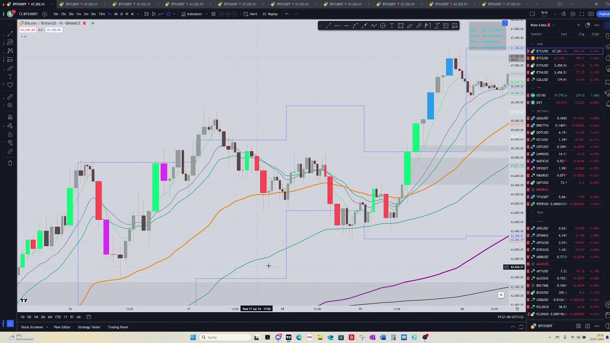
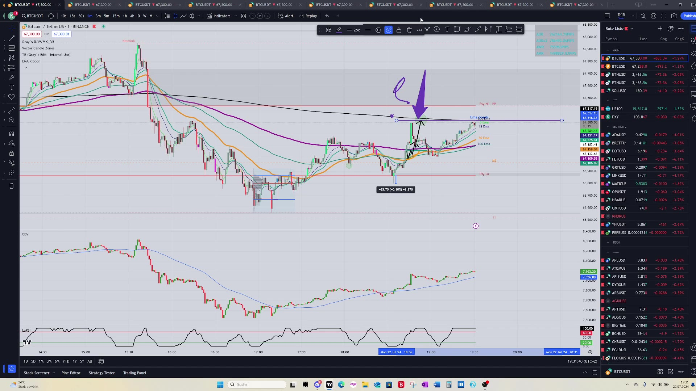
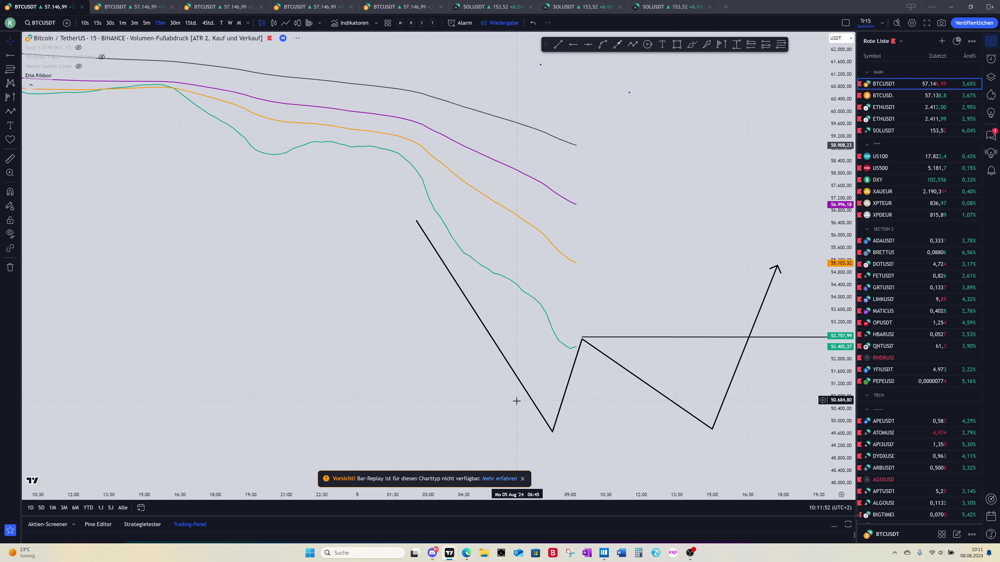
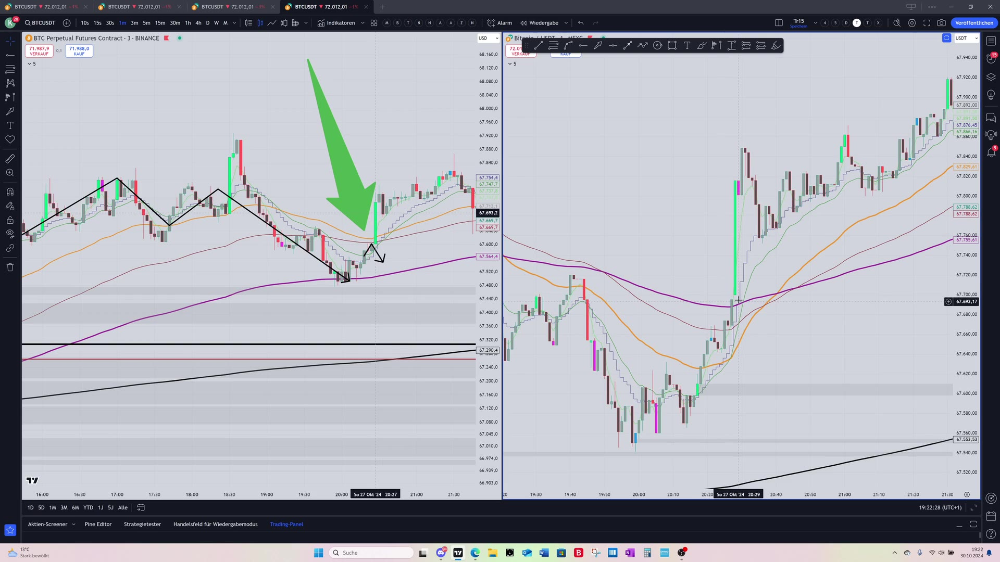
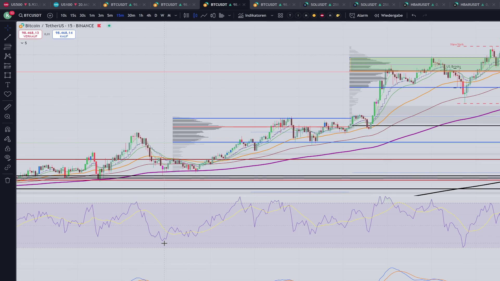

Ein erster Buchentwurf aus den bereits transkribierten Videos. Fokus: TradingView-Setup, Mindset, Footprint/POC, EMA-Scalping, Range-Logik und erste Praxisregeln.
Dies ist noch nicht das finale Buch. Es basiert auf den ersten fertigen Transkripten. Die restlichen Videos werden weiter verarbeitet und spaeter in die finale Version eingearbeitet.
Keine Finanzberatung. Scalping und gehebeltes Trading sind hochriskant. Ziel ist Lernstruktur, nicht Gewinnversprechen.
Scalping ist kein entspannter Nebenbei-Stil. Die Videos machen sehr klar: Auf kleinen Timeframes gewinnt nicht der Trader mit den meisten Indikatoren, sondern derjenige, der schnell, fokussiert und konsequent reagiert. Du brauchst einen Chart, den du sofort lesen kannst, und du brauchst einen Kopf, der in Stressmomenten nicht verhandelt.
Der wichtigste Grundsatz aus den ersten Videos ist unbequem: Verluste gehoeren dazu. Wer versucht, Verlustphasen zu vermeiden, statt sie sauber zu begrenzen, wird im Scalping emotional. Und wer emotional wird, beginnt genau dort Fehler zu machen, wo Sekunden zaehlen.
Das Ziel dieser Preview ist deshalb nicht, dir einen magischen Entry zu geben. Das Ziel ist, die Logik der Videos in ein lernbares System zu giessen: Setup vorbereiten, Marktphase erkennen, Entry nur mit Grund, Take Profit frueh genug, und nach Fehlern nicht eskalieren.

Screenshot aus lokal bereitgestelltem Videomaterial, nur fuer private Lernunterlage.
Das erste technische Fundament ist ein reduziertes TradingView-Setup. Die Videos betonen, dass ein Scalper nicht mit 10 bis 15 Indikatoren arbeiten soll. Jeder Indikator verarbeitet Vergangenheit. Auf 15 Minuten kann das noch akzeptabel sein, auf 1 Minute oder 10 Sekunden wird zu viel Lag schnell gefaehrlich.
Der Chart soll so eingerichtet sein, dass du Marktphase, relevante Zonen und unmittelbare Reaktion erkennst. Dazu gehoeren Zeiteinheiten als Shortcuts, ein Split-Screen fuer groesseren und kleineren Timeframe, ein Linienchart zur schnellen Richtungslesung und wenige Werkzeuge, die du wirklich beherrschst.
Die Videos zeigen eine klare Haltung: Baue dir kein Cockpit, das beeindruckend aussieht. Baue dir ein Cockpit, das dich unter Druck schneller macht.

Screenshot aus lokal bereitgestelltem Videomaterial, nur fuer private Lernunterlage.
Ein wiederkehrendes Werkzeug in den Videos ist die Fixed Volume Range. Sie zeigt fuer einen klar definierten Bereich, wo das meiste Volumen gehandelt wurde. Daraus entsteht der Point of Control, also der Preisbereich, an dem im markierten Abschnitt besonders viel Aktivitaet lag.
Fuer das Scalping ist das nuetzlich, weil du nicht nur fragst: Wo war ein Hoch oder Tief? Du fragst auch: Wo wurde wirklich gehandelt? Eine Zone mit sichtbarer Reaktion und hohem Volumen ist relevanter als eine zufaellige Linie im Chart.
Alarme werden als praktisches Arbeitsmittel genutzt. Sie verhindern, dass du permanent auf den Chart starrst, und sie bringen dich an den Bildschirm, wenn Preis eine vorbereitete Zone erreicht.

Screenshot aus lokal bereitgestelltem Videomaterial, nur fuer private Lernunterlage.
Die Footprint-Videos stellen den Point of Control als wichtigste Information heraus. Nicht jede Zahl im Footprint ist fuer den Einstieg gleich wichtig. Fuer den hier gezeigten Ansatz geht es vor allem darum, ob sich der POC mit der Bewegung verschiebt, ob er an einer EMA oder Zone haengen bleibt und ob er eine Reaktion bestaetigt.
Ein zentraler Gedanke: Wenn der Kurs steigen soll, willst du sehen, dass sich der POC ebenfalls nach oben verlagert. Wenn der POC nicht nachhaltig mitgeht oder an einer Resistance haengen bleibt, ist Vorsicht angesagt.
Der Footprint soll nicht den Blick vernebeln. In manchen Momenten ist er hilfreich, in anderen reicht Struktur plus EMA. Das Buch muss deshalb spaeter klar trennen: Wann bringt der Footprint Zusatzinformation, und wann ist er nur ein weiterer Grund fuer Verwirrung?
Ein starker Teil der Videos ist die Warnung vor Vergleich. Profit-Screens anderer Trader koennen Anfaenger kaputt machen, weil du nie siehst, mit welchem Risiko, welchem Konto, welcher Erfahrung und welcher Marktphase diese Gewinne entstanden sind.
Im Scalping wirkt Vergleich besonders giftig. Du siehst 800 Prozent Gewinn bei jemand anderem und beginnst, deinen Plan zu verlassen. Du haeltst laenger, erhoehst Hebel oder willst einen Verlust sofort zurueckholen. Genau das zerstoert das Konto.
Die Videos schlagen eine andere Messgroesse vor: gruene Tage und saubere Ausfuehrung. Es ist egal, ob in der gruenen Box 10 Euro oder 1000 Euro stehen. Am Anfang geht es darum, Vertrauen in wiederholbare Entscheidungen aufzubauen.

Screenshot aus lokal bereitgestelltem Videomaterial, nur fuer private Lernunterlage.
Mehrere Videos drehen sich um die Frage: In welchem Verlauf sind wir gerade? Auf kleinen Timeframes darfst du nicht einfach Long suchen, wenn der Markt in einem Downtrend steckt. Genauso darfst du nicht jede Bewegung shorten, wenn der Markt gerade in einer Range Support findet.
Die gezeigte Arbeitsweise beginnt mit lokalen Hochs und Tiefs. Daraus entsteht eine Box oder Range. Innerhalb dieser Range werden EMAs, POC, Wicks und Reaktionen genutzt, um zu entscheiden, ob ein Durchbruch, Retest oder Reversal wahrscheinlicher wird.
Ein wichtiger Satz aus der Logik der Videos: Du musst nicht wissen, was der Markt sicher macht. Du musst wissen, an welcher Stelle du handeln darfst und an welcher Stelle du warten musst.
Eine besonders konkrete Strategie aus den fertigen Transkripten ist das Arbeiten mit EMAs, Struktur und schnellem Take Profit. Die Idee ist simpel: Nach einem Durchbruch durch relevante EMAs wird auf Support, Reject oder Fortsetzung geachtet. Wenn mehrere EMAs ueber oder unter dem Kurs liegen, entsteht ein klarer Druckbereich.
Die Videos betonen aber auch: Einfach heisst nicht leicht. Der schwierige Teil ist nicht das Erkennen der Linie, sondern der Exit. In kleinen Bewegungen kann ein zu spaeter Take Profit mehrere kleine Gewinne wieder auffressen.
Der Ansatz bevorzugt fruehes Sichern. Lieber dreimal zu frueh Profit nehmen als einmal zu spaet, wenn der Markt in der Konsolidierung zuruecklaeuft und Gebuehren plus Stopps das Konto fressen.

Screenshot aus lokal bereitgestelltem Videomaterial, nur fuer private Lernunterlage.
Ein interessanter Baustein aus dem spaeteren Material ist der Linienchart. Er wird genutzt, um Bewegungen einfacher zu lesen. Kerzen zeigen viele Details, aber genau diese Details koennen einen Anfaenger ueberfordern.
Die Video-Logik beschreibt den Linienverlauf fast wie eine Uhr: Von 12 bis 2 Uhr wirkt der Verlauf bullish, um 3 Uhr neutralisiert oder dreht er, von 3 bis 6 Uhr entsteht eher Abwaertsdruck. Das ist keine mathematische Regel, sondern ein visuelles Trainingsmodell.
Der Linienchart hilft, Tops, Bottoms, M- und W-Strukturen schneller zu sehen. Er ersetzt nicht den normalen Chart, aber er kann verhindern, dass du in jeder Wick eine neue Geschichte siehst.
Aus den bisherigen Videos laesst sich ein erster Ablauf ableiten. Er ist noch nicht das finale System, aber er ist gut genug fuer eine Preview und fuer erste Uebungen im Replay.
Schritt eins: Groesseren Timeframe pruefen. Bist du in Trend, Range oder Konsolidierung? Schritt zwei: Lokale Zonen markieren. Schritt drei: Auf dem kleinen Timeframe nur an diesen Zonen handeln. Schritt vier: EMA/POC/Footprint nur als Bestaetigung nutzen. Schritt fuenf: Take Profit frueh genug und nach Fehlern sofort stoppen.
Das spaetere finale Buch wird diesen Ablauf mit allen Videos verfeinern. Fuer jetzt ist die wichtigste Erkenntnis: Scalping ist kein Ratespiel. Es ist ein Entscheidungsbaum.
| Schritt | Frage | Wenn ja | Wenn nein |
|---|---|---|---|
| 1 | Ist die Marktphase klar? | Trend/Range markieren | Kein Trade |
| 2 | Liegt Preis an einer relevanten Zone? | Auf Trigger warten | Kein Entry mitten im Chart |
| 3 | Bestaetigen EMA, POC oder Wick die Idee? | Risiko berechnen | Abwarten |
| 4 | Ist der Stop logisch und klein genug? | Trade erlaubt | Trade auslassen |
| 5 | Lauft der Trade sofort sauber? | TP/Stop managen | Frueh raus statt hoffen |
Scalping, bisherige fertige Transkripte in scalping-pipeline/transcripts.